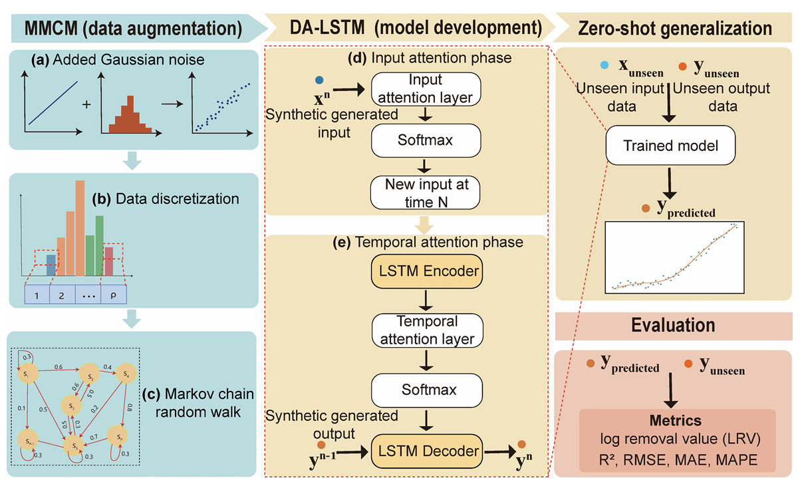

Hi! My name is Jianxu Chen (陈建旭). I am currently a Msc. Student at Mohamed bin Zayed University of Artificial Intelligence (MBZUAI), advised by Prof. Imran Razzak. Previously, I was a VSRP Remote Visiting Research Student at King Abdullah University of Science and Technology (KAUST). I hold dual bachelor's degrees in Information Security from North China Electric Power University (NCEPU) and Mechatronics and Robotics Engineering from Novosibirsk State University (NSU), Russia.
📖 Research Interests
My research focuses on the design and application of deep learning and machine learning algorithms. Current areas of interest include:
- Soft Sensing & Environmental AI — Developing data-driven soft sensors for real-time water quality monitoring and prediction
- Machine Learning — Lifelong learning, zero-shot generalization, self-calibration and self-training strategies
- Deep Learning & Computer Vision — Image recognition, object detection, deep learning model design and optimization
If you are interested in collaborating with me or want to have a chat, feel free to reach me at Jianxu.Chen@mbzuai.ac.ae or chenjianxu75@gmail.com.
🔥 News
📝 Publications
Full list on Google Scholar.
Model generalization paradigms for predicting viral particles and evaluating removal efficiencies in anaerobic membrane bioreactor plants
npj Emerging Contaminants (Nature), 2026

View PaperZero-shot generalization for predicting viral concentrations and evaluating removal efficiencies across wastewater matrices
Scientific Reports (Nature), 2025
Viral particle prediction in wastewater treatment plants using nonlinear lifelong learning models
npj Clean Water (Nature), 2025
🏆 Honors & Awards
China Scholarship Council (CSC), 2022–2024
North China Electric Power University
North China Electric Power University